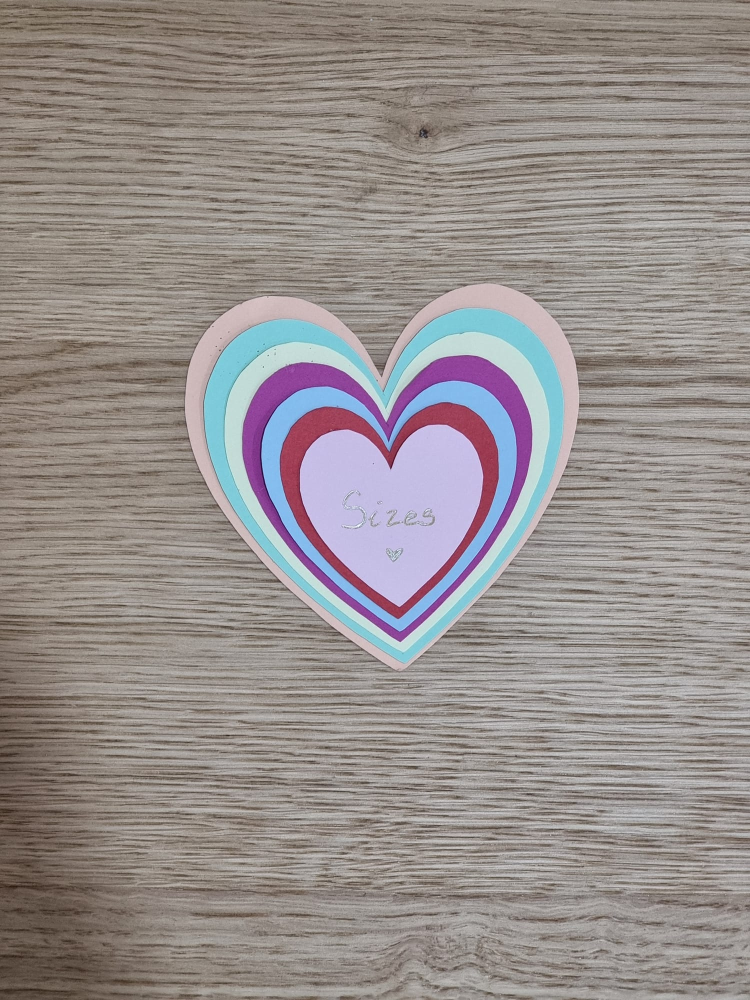
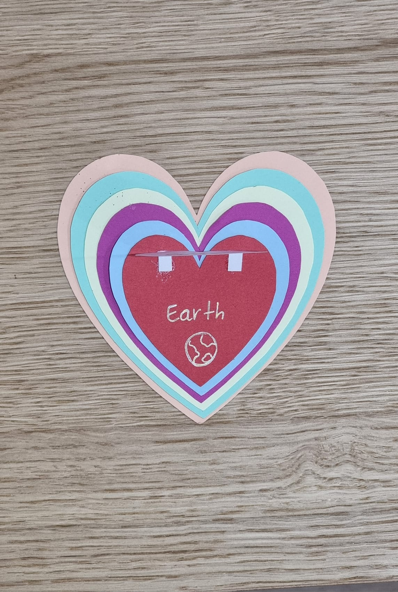
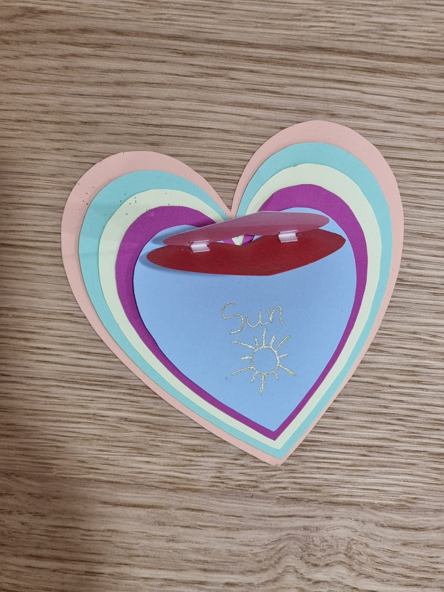
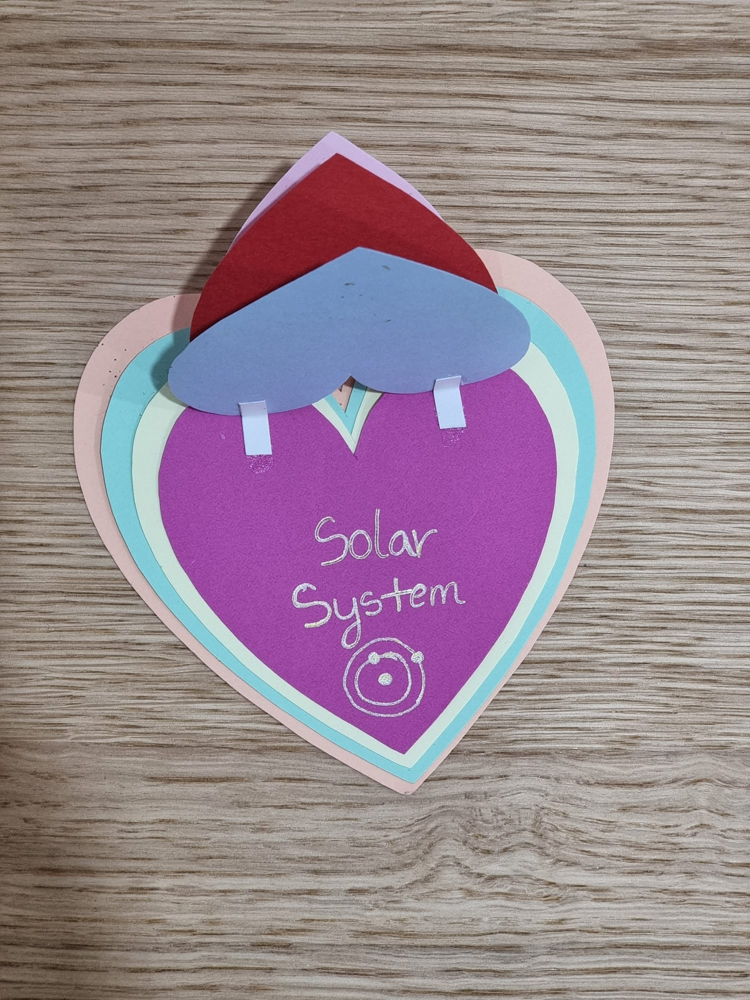
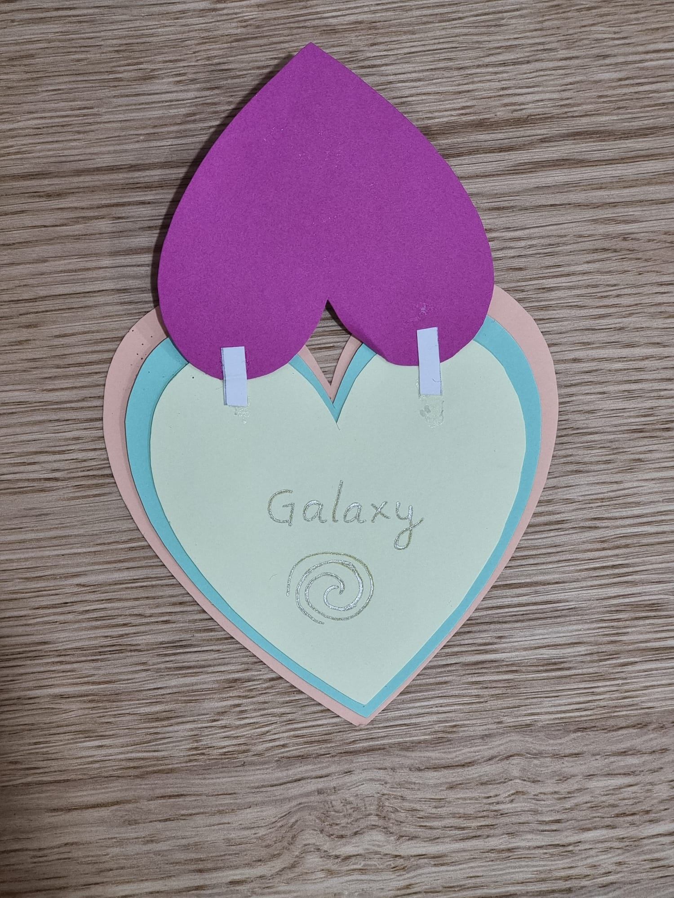
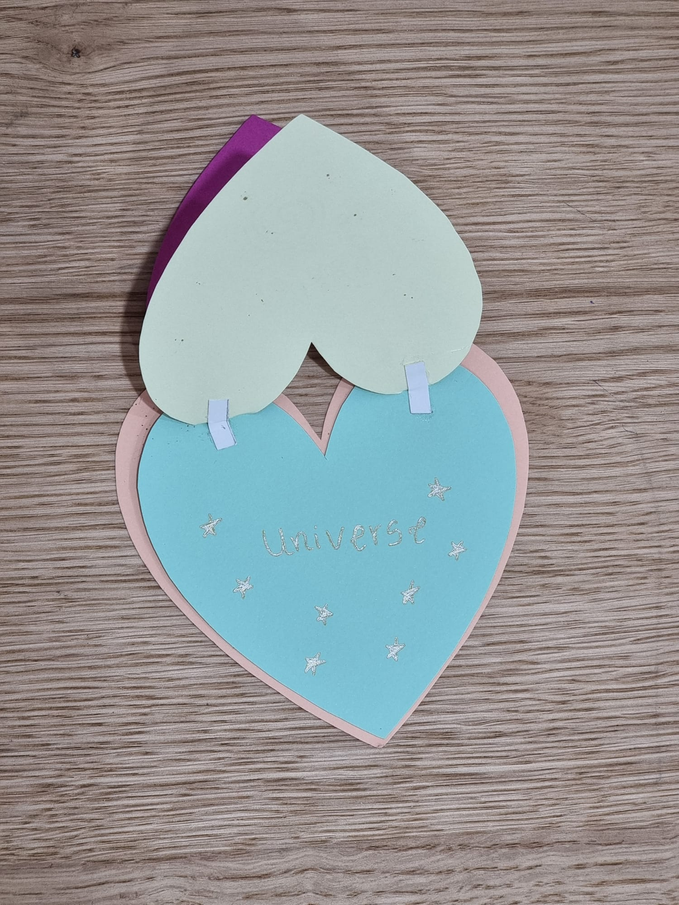

Em dezembro houve presentes fofos, talvez tenha sido por isso que ambos nos esquecemos do presente de 8 meses hahahaha, mas não, deve ter sido por causa do Natal. Em Dezembro, no dia 13 tiveste concerto e eu fui ver, então, decidi fazer-te uma surpresinha e dei-te um ursinho de origami. E no dia 15, deste-me um presente que eram vários corações cada vez maiores sendo o maior o teu amor por mim, não estava à espera desse presente, adorei.





